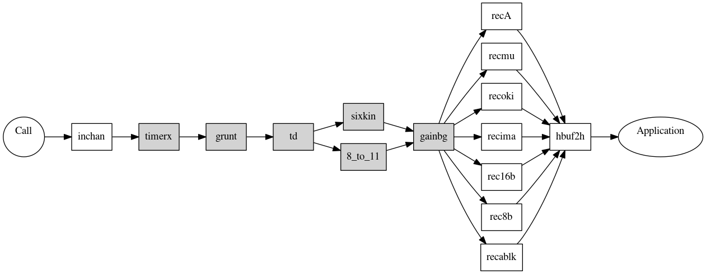
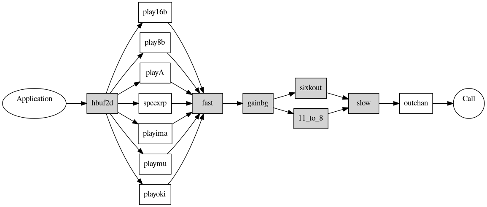

Prosody uses modular firmware, with each module performing a function. This allows the exact mix of desired functionality to be provided. See Prosody Guide - how to download firmware for how to download firmware.
| Basic functionality | |
|---|---|
| Module | Purpose |
| datafeed | Allows data to be passed between the downloadable modules. Always required for Prosody X. |
| hbuf2d | Allows data to be passed to the Prosody DSP from an application running on the controlling host. This module is needed for nearly all types of play and data communications reception. On Prosody X it is linked into the kernel image and thus always loaded for you when the kernel is loaded. |
| hbuf2h | Allows data to be passed to an application running on the controlling host. This module is needed for nearly all types of record and data communications transmission. On Prosody X it is linked into the kernel image and thus always loaded for you when the kernel is loaded. |
| Data Communications modules | |
|---|---|
| Module | Purpose |
| asyrx | Async receive. This is used to implement the async encoding in a receive protocol. It decodes a stream of digital data into a sequence of characters. |
| asytx | Async transmit. This is used to implement the async encoding in a transmit protocol. It encodes a sequence of characters as a stream of digital data. |
| cwrx | CW modem receiver. This decodes an incoming signal from a CW modem. However it does not convert it to digital data, so either fskpll or fskasyrx must be used, depending on how the data is encoded, to complete the decoding. |
| cwtx | CW modem transmitter. |
| datarx | Raw data receiver. This is used to run a protocols directly on a digital bearer channel (in contrast to speech and modems which encode the data as sounds). |
| datatx | Raw data transmitter. This is used to run a protocols directly on a digital bearer channel (in contrast to speech and modems which encode the data as sounds). |
| fmprx | Handles incoming T.38 frames. |
| fmptx | Generates outgoing T.38 frames. |
| fskasyrx | Async receiver for FSK modems. This decodes a sequence of characters from the data received by an FSK modem receiver. This is different from running async on other received data streams because there is no clock. |
| fskpll | Reconstruct a clock from a received FSK data stream. If the output of an FSK modem receiver is to be interpreted as a synchronous encoding, then the data must be divided into bits using a clock recovered from the signal. This module does this, converting the received signal into a digital data signal suitable for decoding by HDLC or sync. |
| fskrx | FSK modem receiver. This decodes an incoming signal from an FSK modem. However it does not convert it to digital data, so either fskpll or fskasyrx must be used, depending on how the data is encoded, to complete the decoding. |
| fsktx | FSK modem transmitter. |
| hdlcrx | HDLC receiver. |
| hdlctx | HDLC transmitter. |
| i460rx | i.460 multiplexing |
| i460tx | i.460 multiplexing |
| ifprx | ASN.1 decoding for T.38 fax transmission. |
| ifptx | ASN.1 encoding for T.38 fax transmission. |
| prefsuf | Prefix/suffix provider. Adds a prefix and a suffix to each transmission. The prefix and suffix can by any number if bits in length. |
| six2five | A helper module used by the modem transmitters V.27ter, V.29, and V.17. |
| sprt | Simple Packet Relay Transport |
| sse | State Signaling Event (SSE) handler |
| syncrx | Synchronous data receiver. |
| synctx | Synchronous data transmitter. |
| ttyasyrx | Receiver for ITU V.18 Annex A compatible TTYs. This decodes a sequence of characters from the data received. |
| v110 | The protocol as defined in V.110. |
| v110rlpr | The V.110 RLP receiver. |
| v110rlpt | The V.110 RLP transmitter. |
| v17rx | The modem receiver defined in V.17. |
| v17tx | The modem transmitter defined in V.17. Also requires six2five |
| v27rx | The modem receiver defined in V.27ter. |
| v27tx | The modem transmitter defined in V.27ter. Also requires six2five |
| v29rx | The modem receiver defined in V.29ter. |
| v29tx | The modem transmitter defined in V.29. Also requires six2five |
| v32 | The modem defined in V.32. |
| v34 | The modem operating in half duplex mode (for fax use) defined in V.34. |
| v34fdx | The modem operating in full duplex mode defined in V.34. |
Data communications modules must be used in the combinations described in Prosody data communcations Protocols and Encodings.
This diagram shows the
relationship between the modules needed for recording. Those shaded are
optional. One of the rec... modules is always needed.

| Speech and Video input modules | |
|---|---|
| Module | Purpose |
| inchan | Generic companded input. This is required for any form of processing on incoming data which is a speech or analogue signal. The only input which does not need it is digital data communications. If this module has not been downloaded, no recording, conferencing or detection will work. |
| invid | AVF recorder video (to host) input task. |
| Speech recording modules | |
|---|---|
| Module | Purpose |
| 8_to_11 | Converter to allow recording at 11kHz sampling rate instead of 8kHz. This is used in conjunction with a recording format to record at a speed useful for playing directly though typical PC soundcards. |
| gainbg | Volume control, automatic gain control, and addition of a background signal. These can all be used with sm_replay_start(), sm_replay_adjust() or sm_record_start(). |
| rec16b | Record 16-bit linear data. |
| rec8b | Record 8-bit linear data. |
| recA | Record A-law companded data. |
| recAVF | Record Audio/Visual streams. |
| recablk | Record data encoded in ACUBLK format. |
| recima | Record data encoded in IMA format. |
| recms8b | Record 8-bit linear data with offset of 128 (Microsoft .WAV 8-bit). |
| recmu | Record mu-law companded data. |
| recoki | Record data encoded in OKI format. |
| sixkin | Converter to allow recording at 6kHz instead of 8kHz. This is used in conjunction with a recording format to reduce the size of the recorded data by 25%. |
| speexrp | Play and record data in Speex format. |
| timerx | Timer to provide a limit on recording duration. |
Note: all speech recording modules require inchan as well.
This diagram shows the
relationship between the modules needed for playing. Those shaded are
optional (and you would never have both fast and
slow in use at the same time). One of the
play... modules is always needed.

| Speech and Video output modules | |
|---|---|
| Module | Purpose |
| outchan | Generic companded output. This is required to produce nearly any form of speech or analogue output signal. The only outputs which do not need it are tone generation and digital data communications. If this module has not been downloaded, no replay or conferencing will work. |
| outvid | AVF player video (from host) output task. |
| tonegen | Tone generation. This is used by sm_play_tone(), sm_play_cptone(), and sm_play_digits(). |
| Speech playing modules | |
|---|---|
| Module | Purpose |
| 11_to_8 | Converter to allow playing of signals which have a sampling rate of 11kHz (at the 8kHz rate used by telephony timeslots). This is used in conjunction with a replay to play data that was recorded at a sampling rate often used when recording from a PC soundcard. |
| fast | Replay at speeds over 100%. The speed is selected by sm_replay_start() or sm_replay_adjust(). If this module has not been downloaded, the replay will play at normal speed. |
| gainbg | Volume control, automatic gain control, and addition of a background signal. These can all be used with sm_replay_start(), sm_replay_adjust() or sm_record_start(). |
| play16b | Play 16-bit linear data. |
| play8b | Play 8-bit linear data. |
| playA | Play A-law companded data. |
| playAVF | Play Audio/Visual streams. |
| playablk | Play data encoded in ACUBLK format. |
| playima | Play data encoded in IMA format. |
| playms8b | Play 8-bit linear data with offset of 128 (Microsoft .WAV 8-bit). |
| playmu | Play mu-law companded data. |
| playoki | Play data encoded in OKI format. |
| sixkout | Converter to allow playing of 6kHz signals at 8kHz. This is used in conjunction with a replay to play data which was recorded as a 6kHz variant of a format normally used at 8kHz. Such a variant is used to reduce the size of the recorded data by 25%. |
| slow | Replay at speeds below 100%. The speed is selected by sm_replay_start() or sm_replay_adjust(). If this module has not been downloaded, the replay will play at normal speed. |
| speexrp | Play and record data in Speex format. |
Note: all speech playing modules require outchan as well.
| Detection modules | |
|---|---|
| Module | Purpose |
| ansam | ANS and AMSam detection Used by sm_ans_listen_for() to detect ANS and AMSam tones. |
| ansdet | Answering machine detection. Used by sm_catsig_listen_for() to distinguish between a live speaker and an answering machine. |
| beepdet | Beep detection. Used by sm_beep_listen_for() to detect beeps. |
| grunt | Grunt detection and silence elimination. Used by sm_record_start() for silence elimination in recordings and by sm_listen_for(). If this module has not been downloaded, no grunt will be detected and recordings will not have silences removed. |
| td | Tone detection. Used by sm_listen_for() for tone detection and by sm_record_start() for tone suppression in recordings. If this module has not been downloaded, no tones will be detected and tones will remain in recordings. |
| Conferencing modules | |
|---|---|
| Module | Purpose |
| conf | Conferencing. This is required if you want to start a standard conference (which is done using sm_conf_prim_start()). If this module has not been downloaded, any attempt to start such a conference will produce an error. |
| Echo cancellation and signal path modules | |
|---|---|
| Module | Purpose |
| delay | Signal path delay processing. |
| echocan | Echo cancellation. If this module has not been downloaded, an attempt to use echo cancellation will use an unmodified signal. |
| emph | Signal path emphasis processing. |
| passthru | A module which permits an incoming signal to be directed to an output. This is used by echo cancellation to save the processed signal. |
| pitchshift | Used in signal paths to raise or lower pitch of speech signal. |
| resample | Used in signal paths to resample wideband to narrow band and vica-versa. |
| IP codecs | |
|---|---|
| Module | Purpose |
| amr-nb | AMR (Adaptive Multi Rate) narrowband codec for audio only. |
| amr-nb-all | AMR (Adaptive Multi Rate) narrowband codecs both for AVF player/recorder and for audio. |
| amr-nb-prs | AMR (Adaptive Multi Rate) narrowband codec for AVF player/recorder. |
| amr-wb | G.722.2 (AMR-WB) wideband codec. |
| evrc | EVRC (Enhanced Variable Rate CODEC) codec. |
| g722 | G.722 Codec |
| g722-1 | G.722-1 Codec |
| g7231a | G.723.1 codec. |
| g726 | G.726 codec. |
| g728 | G.728 codec. |
| g729ab | G.729A codec. |
| g729i | G.729i codec. |
| gsm-efr | GSM-EFR (Enhanced Full Rate) codec. |
| gsm-fr | GSM-FR (Full Rate) codec. |
| iSAC | internet Speech Audio Codec |
| ilbc | iLBC (Internet Low Bit Rate Codec) codec. |
| melpe | Mixed-Excitation Linear Predictive enhanced codec. |
| speex-vmp | RTP Codec for Speex |
| tetra | RTP Tetra Codec. |
| IP general functionslity | |
|---|---|
| Module | Purpose |
| dtlsrx | Passes incoming DTLS packets to the host application. |
| dtlstx | Sends the DTLS packets supplied by the host application. |
| fromudp | UDP collector. Allows data to be collected from a UDP port instead of being supplied by the host application. |
| rtcp | RTCP. |
| securertp | Secure RTP. |
| toudp | UDP dispatcher. Allows data to be sent to a UDP port instead of being given to the host application. |
| vmprx | RTP receiver. |
| vmptx | RTP transmitter. |
| vtdet | Replacement of in-band tones with RFC 2833 tones. |
| Test and debug modules | |
|---|---|
| Module | Purpose |
| cpumon | Cpu usage monitor. |
| heapmon | Heap usage monitor. |